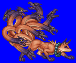
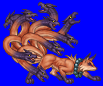
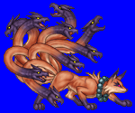
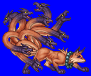

Height: ??? Weight: ???
Habitat: Emperor's Court Origin: China
Meaning: "Nine-tailed fox"
A nine-tailed fox whose coat has a golden sheen. The story of the nine-tailed fox dates back to the Han dynasty. The fox assumed the form of the Emperor's daughter, and wreaked havoc on the imperial court, but in the end, its true nature was discovered, and it escaped into the night. The legend spread to India, and then to Japan. Japanese lore tells of a nine-tailed fox that did a similar misdeed during the time of the Fujiwaras, once again assuming the guise of the Emperor's daughter.